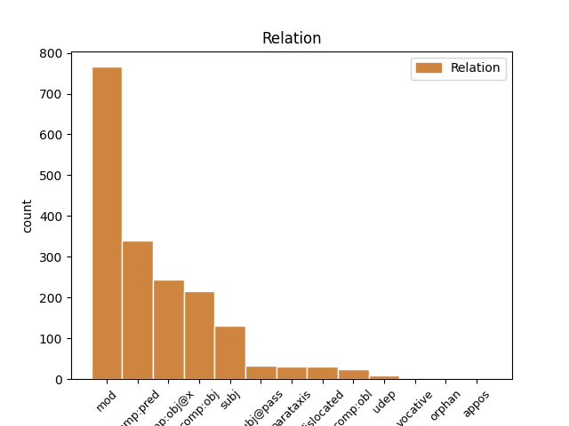
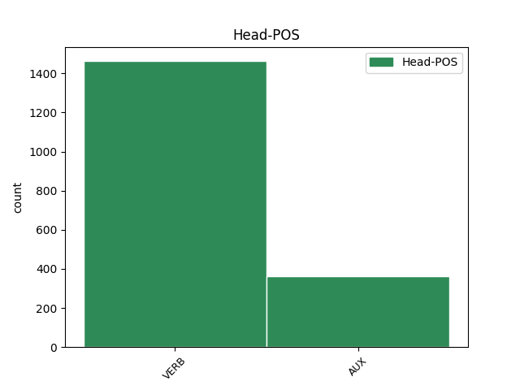
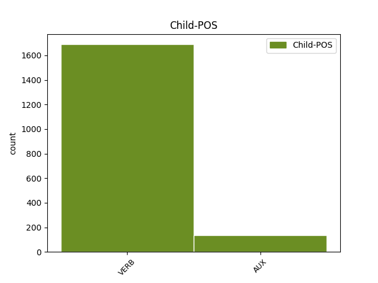

Distribution of features within this leaf



Agreement Rules sorted by frequency.
- When the dependent token is the modifer(mod) of the head token, and the head token is VERB and the dependent token is VERB.
1 sind _ _ _ _ 0 _ _ _
2 auk _ _ _ _ 0 _ _ _
3 managai _ _ _ _ 0 _ _ _
4 ungaƕairbai _ _ _ _ 0 _ _ _
5 lausaiwaurdai _ _ _ _ 0 _ _ _
6 lutondans _ _ _ _ 0 _ _ _
7 þishun _ _ _ _ 0 _ _ _
8 þai _ _ _ _ 0 _ _ _
9 us _ _ _ _ 0 _ _ _
10 bimaita _ _ _ _ 0 _ _ _
11 þanzei _ _ _ _ 0 _ _ _
12 skal _ _ _ _ 0 _ _ _
13 gasakan _ _ _ _ 0 _ _ _
14 þaiei _ _ _ _ 0 _ _ _
15 gardins _ _ _ _ 0 _ _ _
16 allans _ _ _ _ 0 _ _ _
17 uswaltjand us-waltjan VERB V- Mood=Ind|Number=Plur|Person=3|Tense=Pres|VerbForm=Fin|Voice=Act 0 _ _ _
18 laisjandans laisjan VERB V- Case=Nom|Gender=Masc|Number=Plur|Strength=Weak|Tense=Pres|VerbForm=Part|Voice=Act 17 mod _ ref=TIT_1.11
19 þatei _ _ _ _ 0 _ _ _
20 ni _ _ _ _ 0 _ _ _
21 skuld _ _ _ _ 0 _ _ _
22 ist _ _ _ _ 0 _ _ _
23 in _ _ _ _ 0 _ _ _
24 faihugairneins _ _ _ _ 0 _ _ _
1 guþ _ _ _ _ 0 _ _ _
2 andhaitand and-haitan VERB V- Mood=Ind|Number=Plur|Person=3|Tense=Pres|VerbForm=Fin|Voice=Act 0 _ _ _
3 kunnan kunnan VERB V- Tense=Pres|VerbForm=Inf|Voice=Act 2 comp:obj@x _ LId=1|ref=TIT_1.16
4 iþ _ _ _ _ 0 _ _ _
5 waurstwam _ _ _ _ 0 _ _ _
6 inwidand _ _ _ _ 0 _ _ _
7 andasetjai _ _ _ _ 0 _ _ _
8 wisandans _ _ _ _ 0 _ _ _
9 jah _ _ _ _ 0 _ _ _
10 ungalaubjandans _ _ _ _ 0 _ _ _
11 jah _ _ _ _ 0 _ _ _
12 du _ _ _ _ 0 _ _ _
13 allamma _ _ _ _ 0 _ _ _
14 waurstwe _ _ _ _ 0 _ _ _
15 godaize _ _ _ _ 0 _ _ _
16 uskusanai _ _ _ _ 0 _ _ _
1 sind _ _ _ _ 0 _ _ _
2 auk _ _ _ _ 0 _ _ _
3 managai _ _ _ _ 0 _ _ _
4 ungaƕairbai _ _ _ _ 0 _ _ _
5 lausaiwaurdai _ _ _ _ 0 _ _ _
6 lutondans _ _ _ _ 0 _ _ _
7 þishun _ _ _ _ 0 _ _ _
8 þai _ _ _ _ 0 _ _ _
9 us _ _ _ _ 0 _ _ _
10 bimaita _ _ _ _ 0 _ _ _
11 þanzei _ _ _ _ 0 _ _ _
12 skal skulan* VERB V- Mood=Ind|Number=Sing|Person=3|Tense=Pres|VerbForm=Fin|Voice=Act 0 _ _ _
13 gasakan ga-sakan VERB V- Tense=Pres|VerbForm=Inf|Voice=Act 12 comp:obj _ ref=TIT_1.11
14 þaiei _ _ _ _ 0 _ _ _
15 gardins _ _ _ _ 0 _ _ _
16 allans _ _ _ _ 0 _ _ _
17 uswaltjand _ _ _ _ 0 _ _ _
18 laisjandans _ _ _ _ 0 _ _ _
19 þatei _ _ _ _ 0 _ _ _
20 ni _ _ _ _ 0 _ _ _
21 skuld _ _ _ _ 0 _ _ _
22 ist _ _ _ _ 0 _ _ _
23 in _ _ _ _ 0 _ _ _
24 faihugairneins _ _ _ _ 0 _ _ _
1 in _ _ _ _ 0 _ _ _
2 þizozei _ _ _ _ 0 _ _ _
3 waihtais _ _ _ _ 0 _ _ _
4 bilaiþ _ _ _ _ 0 _ _ _
5 þus _ _ _ _ 0 _ _ _
6 in _ _ _ _ 0 _ _ _
7 Kretai _ _ _ _ 0 _ _ _
8 in _ _ _ _ 0 _ _ _
9 þize _ _ _ _ 0 _ _ _
10 ei _ _ _ _ 0 _ _ _
11 wanata _ _ _ _ 0 _ _ _
12 atgaraihtjais _ _ _ _ 0 _ _ _
13 jah _ _ _ _ 0 _ _ _
14 gasatjais _ _ _ _ 0 _ _ _
15 and _ _ _ _ 0 _ _ _
16 baurgs _ _ _ _ 0 _ _ _
17 praizbwtairein _ _ _ _ 0 _ _ _
18 swaswe _ _ _ _ 0 _ _ _
19 ik _ _ _ _ 0 _ _ _
20 þus _ _ _ _ 0 _ _ _
21 garaidida _ _ _ _ 0 _ _ _
22 jabai _ _ _ _ 0 _ _ _
23 ƕas _ _ _ _ 0 _ _ _
24 ist wisan AUX V- Mood=Ind|Number=Sing|Person=3|Tense=Pres|VerbForm=Fin|Voice=Act 0 _ _ _
25 ungafairinonds ungafairinonds VERB V- Case=Nom|Gender=Masc|Number=Sing|Strength=Strong|Tense=Pres|VerbForm=Part|Voice=Act 24 comp:pred _ ref=TIT_1.6
26 ainaizos _ _ _ _ 0 _ _ _
27 qenais _ _ _ _ 0 _ _ _
28 aba _ _ _ _ 0 _ _ _
29 barna _ _ _ _ 0 _ _ _
30 habands _ _ _ _ 0 _ _ _
31 galaubeina _ _ _ _ 0 _ _ _
32 ni _ _ _ _ 0 _ _ _
33 in _ _ _ _ 0 _ _ _
34 usqissai _ _ _ _ 0 _ _ _
35 usstiureins _ _ _ _ 0 _ _ _
36 aiþþau _ _ _ _ 0 _ _ _
37 ungaƕairba _ _ _ _ 0 _ _ _
1 ni _ _ _ _ 0 _ _ _
2 ainshun _ _ _ _ 0 _ _ _
3 drauhtinonds drauhtinon VERB V- Case=Nom|Gender=Masc|Number=Sing|Strength=Strong|Tense=Pres|VerbForm=Part|Voice=Act 5 subj _ ref=2TIM_2.4
4 fraujin _ _ _ _ 0 _ _ _
5 dugawindiþ du-gawindan VERB V- Mood=Ind|Number=Sing|Person=3|Tense=Pres|VerbForm=Fin|Voice=Act 0 _ _ _
6 sik _ _ _ _ 0 _ _ _
7 gawaurkjam _ _ _ _ 0 _ _ _
8 þizos _ _ _ _ 0 _ _ _
9 aldais _ _ _ _ 0 _ _ _
10 ei _ _ _ _ 0 _ _ _
11 galeikai _ _ _ _ 0 _ _ _
12 þammei _ _ _ _ 0 _ _ _
13 drauhtinoþ _ _ _ _ 0 _ _ _
1 Aþþan _ _ _ _ 0 _ _ _
2 þata _ _ _ _ 0 _ _ _
3 kunneis _ _ _ _ 0 _ _ _
4 ei _ _ _ _ 0 _ _ _
5 in _ _ _ _ 0 _ _ _
6 spedistaim _ _ _ _ 0 _ _ _
7 dagam _ _ _ _ 0 _ _ _
8 atgaggand _ _ _ _ 0 _ _ _
9 jera _ _ _ _ 0 _ _ _
10 sleidja _ _ _ _ 0 _ _ _
11 jah _ _ _ _ 0 _ _ _
12 wairþand wairþan VERB V- Mood=Ind|Number=Plur|Person=3|Tense=Pres|VerbForm=Fin|Voice=Act 0 _ _ _
13 mannans _ _ _ _ 0 _ _ _
14 sik _ _ _ _ 0 _ _ _
15 frijondans frijon VERB V- Case=Nom|Gender=Masc|Number=Plur|Strength=Weak|Tense=Pres|VerbForm=Part|Voice=Act 12 comp:pred _ ref=2TIM_3.2
16 faihugairnai _ _ _ _ 0 _ _ _
17 bihaitjans _ _ _ _ 0 _ _ _
18 hauhhairtai _ _ _ _ 0 _ _ _
19 wajamerjandans _ _ _ _ 0 _ _ _
20 fadreinam _ _ _ _ 0 _ _ _
21 ungaƕairbai _ _ _ _ 0 _ _ _
22 launawargos _ _ _ _ 0 _ _ _
23 unairknans _ _ _ _ 0 _ _ _
24 unhunslagai _ _ _ _ 0 _ _ _
25 unmildjai _ _ _ _ 0 _ _ _
26 fairinondans _ _ _ _ 0 _ _ _
27 ungahabandans _ _ _ _ 0 _ _ _
28 sik _ _ _ _ 0 _ _ _
29 unmanarigwai _ _ _ _ 0 _ _ _
30 unseljai _ _ _ _ 0 _ _ _
31 fralewjandans _ _ _ _ 0 _ _ _
32 untilamalskai _ _ _ _ 0 _ _ _
33 ufbaulidai _ _ _ _ 0 _ _ _
34 frijondans _ _ _ _ 0 _ _ _
35 wiljan _ _ _ _ 0 _ _ _
36 seinana _ _ _ _ 0 _ _ _
37 mais _ _ _ _ 0 _ _ _
38 þau _ _ _ _ 0 _ _ _
39 guþ _ _ _ _ 0 _ _ _
40 habandans _ _ _ _ 0 _ _ _
41 hiwi _ _ _ _ 0 _ _ _
42 gagudeins _ _ _ _ 0 _ _ _
43 iþ _ _ _ _ 0 _ _ _
44 maht _ _ _ _ 0 _ _ _
45 izos _ _ _ _ 0 _ _ _
46 inwidandans _ _ _ _ 0 _ _ _
1 Iþ _ _ _ _ 0 _ _ _
2 þu _ _ _ _ 0 _ _ _
3 rodei rodjan VERB V- Mood=Imp|Number=Sing|Person=2|Tense=Pres|VerbForm=Fin|Voice=Act 0 _ _ _
4 þatei _ _ _ _ 0 _ _ _
5 gadof _ _ _ _ 0 _ _ _
6 ist wisan AUX V- Mood=Ind|Number=Sing|Person=3|Tense=Pres|VerbForm=Fin|Voice=Act 3 comp:obj _ LId=1|ref=TIT_2.1
7 þizai _ _ _ _ 0 _ _ _
8 hailon _ _ _ _ 0 _ _ _
9 laiseinai _ _ _ _ 0 _ _ _
1 guþ _ _ _ _ 0 _ _ _
2 andhaitand _ _ _ _ 0 _ _ _
3 kunnan _ _ _ _ 0 _ _ _
4 iþ _ _ _ _ 0 _ _ _
5 waurstwam _ _ _ _ 0 _ _ _
6 inwidand in-widan VERB V- Mood=Ind|Number=Plur|Person=3|Tense=Pres|VerbForm=Fin|Voice=Act 0 _ _ _
7 andasetjai _ _ _ _ 0 _ _ _
8 wisandans wisan AUX V- Case=Nom|Gender=Masc|Number=Plur|Strength=Weak|Tense=Pres|VerbForm=Part|Voice=Act 6 mod _ LId=1|ref=TIT_1.16
9 jah _ _ _ _ 0 _ _ _
10 ungalaubjandans _ _ _ _ 0 _ _ _
11 jah _ _ _ _ 0 _ _ _
12 du _ _ _ _ 0 _ _ _
13 allamma _ _ _ _ 0 _ _ _
14 waurstwe _ _ _ _ 0 _ _ _
15 godaize _ _ _ _ 0 _ _ _
16 uskusanai _ _ _ _ 0 _ _ _
1 in _ _ _ _ 0 _ _ _
2 þizozei _ _ _ _ 0 _ _ _
3 fairinos _ _ _ _ 0 _ _ _
4 gasak _ _ _ _ 0 _ _ _
5 ins _ _ _ _ 0 _ _ _
6 ƕassaba _ _ _ _ 0 _ _ _
7 ei _ _ _ _ 0 _ _ _
8 hailai _ _ _ _ 0 _ _ _
9 sijaina wisan AUX V- Mood=Opt|Number=Plur|Person=3|Tense=Pres|VerbForm=Fin|Voice=Act 0 _ _ _
10 in _ _ _ _ 0 _ _ _
11 galaubeinai _ _ _ _ 0 _ _ _
12 ni _ _ _ _ 0 _ _ _
13 atsaiƕandans at-saiƕan VERB V- Case=Nom|Gender=Masc|Number=Plur|Strength=Weak|Tense=Pres|VerbForm=Part|Voice=Act 9 mod _ ref=TIT_1.14
14 judaiwiskaize _ _ _ _ 0 _ _ _
15 spilli _ _ _ _ 0 _ _ _
16 jah _ _ _ _ 0 _ _ _
17 anabusne _ _ _ _ 0 _ _ _
18 manne _ _ _ _ 0 _ _ _
19 afwandjandane _ _ _ _ 0 _ _ _
20 sis _ _ _ _ 0 _ _ _
21 sunja _ _ _ _ 0 _ _ _
1 aþþan _ _ _ _ 0 _ _ _
2 tulgus _ _ _ _ 0 _ _ _
3 grunduwaddjus _ _ _ _ 0 _ _ _
4 gudis _ _ _ _ 0 _ _ _
5 standiþ standan VERB V- Mood=Ind|Number=Sing|Person=3|Tense=Pres|VerbForm=Fin|Voice=Act 0 _ _ _
6 habands _ _ _ _ 0 _ _ _
7 sigljo _ _ _ _ 0 _ _ _
8 þata _ _ _ _ 0 _ _ _
9 kunþa _ _ _ _ 0 _ _ _
10 frauja _ _ _ _ 0 _ _ _
11 þans _ _ _ _ 0 _ _ _
12 þaiei _ _ _ _ 0 _ _ _
13 sind _ _ _ _ 0 _ _ _
14 is _ _ _ _ 0 _ _ _
15 jah _ _ _ _ 0 _ _ _
16 afstandai af-standan VERB V- Mood=Opt|Number=Sing|Person=3|Tense=Pres|VerbForm=Fin|Voice=Act 5 parataxis _ ref=2TIM_2.19
17 af _ _ _ _ 0 _ _ _
18 unselein _ _ _ _ 0 _ _ _
19 ƕazuh _ _ _ _ 0 _ _ _
20 saei _ _ _ _ 0 _ _ _
21 namnjai _ _ _ _ 0 _ _ _
22 namo _ _ _ _ 0 _ _ _
23 fraujins _ _ _ _ 0 _ _ _
1 jah _ _ _ _ 0 _ _ _
2 awiliudo awiliudon VERB V- Mood=Ind|Number=Sing|Person=1|Tense=Pres|VerbForm=Fin|Voice=Act 0 _ _ _
3 þamma _ _ _ _ 0 _ _ _
4 inswinþjandin in-swinþjan VERB V- Case=Dat|Gender=Masc|Number=Sing|Strength=Weak|Tense=Pres|VerbForm=Part|Voice=Act 2 comp:obl _ ref=1TIM_1.12
5 mik _ _ _ _ 0 _ _ _
6 Xristau _ _ _ _ 0 _ _ _
7 Iesu _ _ _ _ 0 _ _ _
8 fraujin _ _ _ _ 0 _ _ _
9 unsaramma _ _ _ _ 0 _ _ _
10 unte _ _ _ _ 0 _ _ _
11 triggwana _ _ _ _ 0 _ _ _
12 mik _ _ _ _ 0 _ _ _
13 rahnida _ _ _ _ 0 _ _ _
14 gasatjands _ _ _ _ 0 _ _ _
15 in _ _ _ _ 0 _ _ _
16 andbahtja _ _ _ _ 0 _ _ _
17 ikei _ _ _ _ 0 _ _ _
18 faura _ _ _ _ 0 _ _ _
19 was _ _ _ _ 0 _ _ _
20 wajamerjands _ _ _ _ 0 _ _ _
21 jah _ _ _ _ 0 _ _ _
22 wraks _ _ _ _ 0 _ _ _
23 jah _ _ _ _ 0 _ _ _
24 ufbrikands _ _ _ _ 0 _ _ _
1 unte _ _ _ _ 0 _ _ _
2 us _ _ _ _ 0 _ _ _
3 þaim _ _ _ _ 0 _ _ _
4 sind wisan AUX V- Mood=Ind|Number=Plur|Person=3|Tense=Pres|VerbForm=Fin|Voice=Act 0 _ _ _
5 þaiei _ _ _ _ 0 _ _ _
6 sliupand sliupan VERB V- Mood=Ind|Number=Plur|Person=3|Tense=Pres|VerbForm=Fin|Voice=Act 4 subj _ ref=2TIM_3.6
7 in _ _ _ _ 0 _ _ _
8 gardins _ _ _ _ 0 _ _ _
9 jah _ _ _ _ 0 _ _ _
10 frahunþana _ _ _ _ 0 _ _ _
11 tiuhand _ _ _ _ 0 _ _ _
12 qineina _ _ _ _ 0 _ _ _
13 afhlaþana _ _ _ _ 0 _ _ _
14 frawaurhtim _ _ _ _ 0 _ _ _
15 þoei _ _ _ _ 0 _ _ _
16 tiuhanda _ _ _ _ 0 _ _ _
17 du _ _ _ _ 0 _ _ _
18 lustum _ _ _ _ 0 _ _ _
19 missaleikaim _ _ _ _ 0 _ _ _
20 sinteino _ _ _ _ 0 _ _ _
21 laisjandona _ _ _ _ 0 _ _ _
22 sik _ _ _ _ 0 _ _ _
23 jan _ _ _ _ 0 _ _ _
24 ni _ _ _ _ 0 _ _ _
25 aiw _ _ _ _ 0 _ _ _
26 ƕanhun _ _ _ _ 0 _ _ _
27 in _ _ _ _ 0 _ _ _
28 ufkunþja _ _ _ _ 0 _ _ _
29 sunjos _ _ _ _ 0 _ _ _
30 qiman _ _ _ _ 0 _ _ _
31 mahteiga _ _ _ _ 0 _ _ _
1 samaleiko _ _ _ _ 0 _ _ _
2 þan _ _ _ _ 0 _ _ _
3 jah _ _ _ _ 0 _ _ _
4 waurstwa _ _ _ _ 0 _ _ _
5 goda _ _ _ _ 0 _ _ _
6 swikunþa _ _ _ _ 0 _ _ _
7 sind _ _ _ _ 0 _ _ _
8 jah _ _ _ _ 0 _ _ _
9 þoei _ _ _ _ 0 _ _ _
10 aljaleikos _ _ _ _ 0 _ _ _
11 sik _ _ _ _ 0 _ _ _
12 habandona _ _ _ _ 0 _ _ _
13 filhan filhan VERB V- Tense=Pres|VerbForm=Inf|Voice=Act 16 subj@pass _ ref=1TIM_5.25
14 ni _ _ _ _ 0 _ _ _
15 mahta _ _ _ _ 0 _ _ _
16 sind wisan AUX V- Mood=Ind|Number=Plur|Person=3|Tense=Pres|VerbForm=Fin|Voice=Act 0 _ _ _
1 manna _ _ _ _ 0 _ _ _
2 auk _ _ _ _ 0 _ _ _
3 þatei _ _ _ _ 0 _ _ _
4 saijiþ saian VERB V- Mood=Ind|Number=Sing|Person=3|Tense=Pres|VerbForm=Fin|Voice=Act 7 dislocated _ ref=GAL_6.7
5 þata _ _ _ _ 0 _ _ _
6 jah _ _ _ _ 0 _ _ _
7 sneiþiþ sneiþan VERB V- Mood=Ind|Number=Sing|Person=3|Tense=Pres|VerbForm=Fin|Voice=Act 0 _ _ _
1 skal skulan* VERB V- Mood=Ind|Number=Sing|Person=3|Tense=Pres|VerbForm=Fin|Voice=Act 0 _ _ _
2 uþ _ _ _ _ 0 _ _ _
3 þan _ _ _ _ 0 _ _ _
4 aipiskaupus _ _ _ _ 0 _ _ _
5 ungafairinoþs _ _ _ _ 0 _ _ _
6 wisan wisan AUX V- Tense=Pres|VerbForm=Inf|Voice=Act 1 comp:obj@x _ LId=1|ref=TIT_1.7
7 swe _ _ _ _ 0 _ _ _
8 gudis _ _ _ _ 0 _ _ _
9 fauragaggja _ _ _ _ 0 _ _ _
10 ni _ _ _ _ 0 _ _ _
11 hauhhairts _ _ _ _ 0 _ _ _
12 ni _ _ _ _ 0 _ _ _
13 þwairhs _ _ _ _ 0 _ _ _
14 ni _ _ _ _ 0 _ _ _
15 weinnas _ _ _ _ 0 _ _ _
16 ni _ _ _ _ 0 _ _ _
17 slahals _ _ _ _ 0 _ _ _
18 ni _ _ _ _ 0 _ _ _
19 aglaitgastalds _ _ _ _ 0 _ _ _
20 ak _ _ _ _ 0 _ _ _
21 gastigods _ _ _ _ 0 _ _ _
22 bleiþs _ _ _ _ 0 _ _ _
23 andaþahts _ _ _ _ 0 _ _ _
24 garaihts _ _ _ _ 0 _ _ _
25 weihs _ _ _ _ 0 _ _ _
26 gaþaurbs _ _ _ _ 0 _ _ _
27 waurdis _ _ _ _ 0 _ _ _
28 triggws _ _ _ _ 0 _ _ _
29 ei _ _ _ _ 0 _ _ _
30 mahteigs _ _ _ _ 0 _ _ _
31 sijai _ _ _ _ 0 _ _ _
32 jah _ _ _ _ 0 _ _ _
33 gaþlaihan _ _ _ _ 0 _ _ _
34 in _ _ _ _ 0 _ _ _
35 laiseinai _ _ _ _ 0 _ _ _
36 hailai _ _ _ _ 0 _ _ _
37 jaþ _ _ _ _ 0 _ _ _
38 þans _ _ _ _ 0 _ _ _
39 andstandandans _ _ _ _ 0 _ _ _
40 gasakan _ _ _ _ 0 _ _ _
1 iþ _ _ _ _ 0 _ _ _
2 weis _ _ _ _ 0 _ _ _
3 dagis _ _ _ _ 0 _ _ _
4 wisandans wisan AUX V- Case=Nom|Gender=Masc|Number=Plur|Strength=Weak|Tense=Pres|VerbForm=Part|Voice=Act 6 mod _ LId=1|ref=1THESS_5.8
5 usskawai _ _ _ _ 0 _ _ _
6 sijaima wisan AUX V- Mood=Opt|Number=Plur|Person=1|Tense=Pres|VerbForm=Fin|Voice=Act 0 _ _ _
7 gahamodai _ _ _ _ 0 _ _ _
8 brunjon _ _ _ _ 0 _ _ _
9 galaubeinais _ _ _ _ 0 _ _ _
10 jah _ _ _ _ 0 _ _ _
11 friaþwos _ _ _ _ 0 _ _ _
12 jah _ _ _ _ 0 _ _ _
13 hilma _ _ _ _ 0 _ _ _
14 wenai _ _ _ _ 0 _ _ _
15 naseinais _ _ _ _ 0 _ _ _
1 wainei _ _ _ _ 0 _ _ _
2 jah _ _ _ _ 0 _ _ _
3 usmaitaindau us-maitan VERB V- Mood=Opt|Number=Plur|Person=3|Tense=Pres|VerbForm=Fin|Voice=Pass 0 _ _ _
4 þai _ _ _ _ 0 _ _ _
5 drobjandans drobjan VERB V- Case=Nom|Gender=Masc|Number=Plur|Strength=Weak|Tense=Pres|VerbForm=Part|Voice=Act 3 subj@pass _ ref=GAL_5.12
6 izwis _ _ _ _ 0 _ _ _
1 biþe _ _ _ _ 0 _ _ _
2 qimiþ _ _ _ _ 0 _ _ _
3 þatei _ _ _ _ 0 _ _ _
4 ustauhan _ _ _ _ 0 _ _ _
5 ist _ _ _ _ 0 _ _ _
6 gataurniþ ga-taurnan VERB V- Mood=Ind|Number=Sing|Person=3|Tense=Pres|VerbForm=Fin|Voice=Act 0 _ _ _
7 þatei _ _ _ _ 0 _ _ _
8 us _ _ _ _ 0 _ _ _
9 dailai _ _ _ _ 0 _ _ _
10 ist wisan AUX V- Mood=Ind|Number=Sing|Person=3|Tense=Pres|VerbForm=Fin|Voice=Act 6 subj _ LId=1|ref=1COR_13.10
1 unte _ _ _ _ 0 _ _ _
2 ni _ _ _ _ 0 _ _ _
3 saei _ _ _ _ 0 _ _ _
4 sik _ _ _ _ 0 _ _ _
5 silban _ _ _ _ 0 _ _ _
6 gaswikunþeiþ ga-swikunþjan VERB V- Mood=Ind|Number=Sing|Person=3|Tense=Pres|VerbForm=Fin|Voice=Act 8 dislocated _ ref=2COR_10.18
7 jains _ _ _ _ 0 _ _ _
8 ist wisan AUX V- Mood=Ind|Number=Sing|Person=3|Tense=Pres|VerbForm=Fin|Voice=Act 0 _ _ _
9 gakusans _ _ _ _ 0 _ _ _
10 ak _ _ _ _ 0 _ _ _
11 þanei _ _ _ _ 0 _ _ _
12 frauja _ _ _ _ 0 _ _ _
13 gaswikunþeiþ _ _ _ _ 0 _ _ _
1 unte _ _ _ _ 0 _ _ _
2 þos _ _ _ _ 0 _ _ _
3 raihtis _ _ _ _ 0 _ _ _
4 bokos _ _ _ _ 0 _ _ _
5 qiþand qiþan VERB V- Mood=Ind|Number=Plur|Person=3|Tense=Pres|VerbForm=Fin|Voice=Act 7 parataxis _ ref=2COR_10.10
6 kaurjos _ _ _ _ 0 _ _ _
7 sind wisan AUX V- Mood=Ind|Number=Plur|Person=3|Tense=Pres|VerbForm=Fin|Voice=Act 0 _ _ _
8 jah _ _ _ _ 0 _ _ _
9 swinþos _ _ _ _ 0 _ _ _
10 iþ _ _ _ _ 0 _ _ _
11 qums _ _ _ _ 0 _ _ _
12 leikis _ _ _ _ 0 _ _ _
13 lasiws _ _ _ _ 0 _ _ _
14 jah _ _ _ _ 0 _ _ _
15 waurd _ _ _ _ 0 _ _ _
16 frakunþ _ _ _ _ 0 _ _ _
1 ni _ _ _ _ 0 _ _ _
2 manna _ _ _ _ 0 _ _ _
3 þeinai _ _ _ _ 0 _ _ _
4 jundai _ _ _ _ 0 _ _ _
5 frakunni _ _ _ _ 0 _ _ _
6 ak _ _ _ _ 0 _ _ _
7 frisahts _ _ _ _ 0 _ _ _
8 sijais wisan AUX V- Mood=Opt|Number=Sing|Person=2|Tense=Pres|VerbForm=Fin|Voice=Act 0 _ _ _
9 þaim _ _ _ _ 0 _ _ _
10 galaubjandam ga-laubjan VERB V- Case=Dat|Gender=Masc|Number=Plur|Strength=Weak|Tense=Pres|VerbForm=Part|Voice=Act 8 udep _ ref=1TIM_4.12
11 in _ _ _ _ 0 _ _ _
12 waurda _ _ _ _ 0 _ _ _
13 in _ _ _ _ 0 _ _ _
14 usmeta _ _ _ _ 0 _ _ _
15 in _ _ _ _ 0 _ _ _
16 friaþwai _ _ _ _ 0 _ _ _
17 in _ _ _ _ 0 _ _ _
18 galaubeinai _ _ _ _ 0 _ _ _
19 in _ _ _ _ 0 _ _ _
20 swikniþai _ _ _ _ 0 _ _ _
1 aþþan _ _ _ _ 0 _ _ _
2 þaiei _ _ _ _ 0 _ _ _
3 galaubjandans _ _ _ _ 0 _ _ _
4 haband _ _ _ _ 0 _ _ _
5 fraujans _ _ _ _ 0 _ _ _
6 ni _ _ _ _ 0 _ _ _
7 frakunneina _ _ _ _ 0 _ _ _
8 unte _ _ _ _ 0 _ _ _
9 broþrjus _ _ _ _ 0 _ _ _
10 sind _ _ _ _ 0 _ _ _
11 ak _ _ _ _ 0 _ _ _
12 mais _ _ _ _ 0 _ _ _
13 skalkinona _ _ _ _ 0 _ _ _
14 unte _ _ _ _ 0 _ _ _
15 galaubjandans _ _ _ _ 0 _ _ _
16 sind wisan AUX V- Mood=Ind|Number=Plur|Person=3|Tense=Pres|VerbForm=Fin|Voice=Act 0 _ _ _
17 jah _ _ _ _ 0 _ _ _
18 liubai _ _ _ _ 0 _ _ _
19 þaiei _ _ _ _ 0 _ _ _
20 wailadedais _ _ _ _ 0 _ _ _
21 gadailans _ _ _ _ 0 _ _ _
22 sind wisan AUX V- Mood=Ind|Number=Plur|Person=3|Tense=Pres|VerbForm=Fin|Voice=Act 16 subj _ LId=1|ref=1TIM_6.2
1 ist wisan AUX V- Mood=Ind|Number=Sing|Person=3|Tense=Pres|VerbForm=Fin|Voice=Act 0 _ _ _
2 galeikon gáleikon VERB V- Tense=Pres|VerbForm=Inf|Voice=Act 1 comp:obj _ ref=2THESS_3.7
3 unsis _ _ _ _ 0 _ _ _
4 unte _ _ _ _ 0 _ _ _
5 ni _ _ _ _ 0 _ _ _
6 ungatewidai _ _ _ _ 0 _ _ _
7 wesum _ _ _ _ 0 _ _ _
8 in _ _ _ _ 0 _ _ _
9 izwis _ _ _ _ 0 _ _ _
10 nih _ _ _ _ 0 _ _ _
11 arwjo _ _ _ _ 0 _ _ _
12 hlaib _ _ _ _ 0 _ _ _
13 matidedum _ _ _ _ 0 _ _ _
14 at _ _ _ _ 0 _ _ _
15 ƕamma _ _ _ _ 0 _ _ _
16 ak _ _ _ _ 0 _ _ _
17 winnandans _ _ _ _ 0 _ _ _
18 in _ _ _ _ 0 _ _ _
19 arbaidai _ _ _ _ 0 _ _ _
20 naht _ _ _ _ 0 _ _ _
21 jah _ _ _ _ 0 _ _ _
22 daga _ _ _ _ 0 _ _ _
23 waurkjandans _ _ _ _ 0 _ _ _
24 ei _ _ _ _ 0 _ _ _
25 ni _ _ _ _ 0 _ _ _
26 kauridedeima _ _ _ _ 0 _ _ _
27 ƕana _ _ _ _ 0 _ _ _
28 izwara _ _ _ _ 0 _ _ _
1 swe _ _ _ _ 0 _ _ _
2 barna _ _ _ _ 0 _ _ _
3 liuhadis _ _ _ _ 0 _ _ _
4 gaggaiþ gaggan VERB V- Mood=Opt|Number=Plur|Person=2|Tense=Pres|VerbForm=Fin|Voice=Act 0 _ _ _
5 aþþan _ _ _ _ 0 _ _ _
6 akran _ _ _ _ 0 _ _ _
7 liuhadis _ _ _ _ 0 _ _ _
8 ist wisan AUX V- Mood=Ind|Number=Sing|Person=3|Tense=Pres|VerbForm=Fin|Voice=Act 4 parataxis _ LId=1|ref=EPH_5.9
9 in _ _ _ _ 0 _ _ _
10 allai _ _ _ _ 0 _ _ _
11 selein _ _ _ _ 0 _ _ _
12 jah _ _ _ _ 0 _ _ _
13 garaihtein _ _ _ _ 0 _ _ _
14 jah _ _ _ _ 0 _ _ _
15 sunjai _ _ _ _ 0 _ _ _
16 gakiusandans _ _ _ _ 0 _ _ _
17 þatei _ _ _ _ 0 _ _ _
18 sijai _ _ _ _ 0 _ _ _
19 waila _ _ _ _ 0 _ _ _
20 galeikaiþ _ _ _ _ 0 _ _ _
21 fraujin _ _ _ _ 0 _ _ _
1 waila _ _ _ _ 0 _ _ _
2 wisan _ _ _ _ 0 _ _ _
3 jah _ _ _ _ 0 _ _ _
4 faginon _ _ _ _ 0 _ _ _
5 skuld _ _ _ _ 0 _ _ _
6 was _ _ _ _ 0 _ _ _
7 unte _ _ _ _ 0 _ _ _
8 broþar _ _ _ _ 0 _ _ _
9 þeins _ _ _ _ 0 _ _ _
10 dauþs _ _ _ _ 0 _ _ _
11 was _ _ _ _ 0 _ _ _
12 jah _ _ _ _ 0 _ _ _
13 gaqiunoda _ _ _ _ 0 _ _ _
14 jah _ _ _ _ 0 _ _ _
15 fralusans fra-liusan VERB V- Aspect=Perf|Case=Nom|Gender=Masc|Number=Sing|Strength=Strong|Tense=Past|VerbForm=Part|Voice=Pass 0 _ _ _
16 jah _ _ _ _ 0 _ _ _
17 bigitans _ _ _ _ 0 _ _ _
18 warþ wairþan VERB V- Mood=Ind|Number=Sing|Person=3|Tense=Past|VerbForm=Fin|Voice=Act 15 orphan _ ref=LUKE_15.32
1 aftra _ _ _ _ 0 _ _ _
2 qima _ _ _ _ 0 _ _ _
3 jah _ _ _ _ 0 _ _ _
4 franima fra-niman VERB V- Mood=Ind|Number=Sing|Person=1|Tense=Pres|VerbForm=Fin|Voice=Act 0 _ _ _
5 izwis _ _ _ _ 0 _ _ _
6 du _ _ _ _ 0 _ _ _
7 mis _ _ _ _ 0 _ _ _
8 silbin _ _ _ _ 0 _ _ _
9 ei _ _ _ _ 0 _ _ _
10 þarei _ _ _ _ 0 _ _ _
11 im wisan AUX V- Mood=Ind|Number=Sing|Person=1|Tense=Pres|VerbForm=Fin|Voice=Act 4 dislocated _ LId=1|ref=JOHN_14.3
12 ik _ _ _ _ 0 _ _ _
13 þaruh _ _ _ _ 0 _ _ _
14 sijuþ _ _ _ _ 0 _ _ _
15 jah _ _ _ _ 0 _ _ _
16 jus _ _ _ _ 0 _ _ _
1 qiþa qiþan VERB V- Mood=Ind|Number=Sing|Person=1|Tense=Pres|VerbForm=Fin|Voice=Act 0 _ _ _
2 auk _ _ _ _ 0 _ _ _
3 þairh _ _ _ _ 0 _ _ _
4 anst _ _ _ _ 0 _ _ _
5 gudis _ _ _ _ 0 _ _ _
6 sei _ _ _ _ 0 _ _ _
7 gibana _ _ _ _ 0 _ _ _
8 ist _ _ _ _ 0 _ _ _
9 mis _ _ _ _ 0 _ _ _
10 allaim _ _ _ _ 0 _ _ _
11 wisandam wisan AUX V- Case=Dat|Gender=Masc|Number=Plur|Strength=Weak|Tense=Pres|VerbForm=Part|Voice=Act 1 udep _ LId=1|ref=ROM_12.3
12 in _ _ _ _ 0 _ _ _
13 izwis _ _ _ _ 0 _ _ _
14 ni _ _ _ _ 0 _ _ _
15 mais _ _ _ _ 0 _ _ _
16 fraþjan _ _ _ _ 0 _ _ _
17 þau _ _ _ _ 0 _ _ _
18 skuli _ _ _ _ 0 _ _ _
19 fraþjan _ _ _ _ 0 _ _ _
20 ak _ _ _ _ 0 _ _ _
21 fraþjan _ _ _ _ 0 _ _ _
22 du _ _ _ _ 0 _ _ _
23 waila _ _ _ _ 0 _ _ _
24 fraþjan _ _ _ _ 0 _ _ _
25 ƕarjammeh _ _ _ _ 0 _ _ _
26 swaswe _ _ _ _ 0 _ _ _
27 guþ _ _ _ _ 0 _ _ _
28 gadailida _ _ _ _ 0 _ _ _
29 mitaþ _ _ _ _ 0 _ _ _
30 galaubeinais _ _ _ _ 0 _ _ _
1 unte _ _ _ _ 0 _ _ _
2 nist _ _ _ _ 0 _ _ _
3 waldufni _ _ _ _ 0 _ _ _
4 alja _ _ _ _ 0 _ _ _
5 fram _ _ _ _ 0 _ _ _
6 guda _ _ _ _ 0 _ _ _
7 iþ _ _ _ _ 0 _ _ _
8 þo _ _ _ _ 0 _ _ _
9 wisandona wisan AUX V- Case=Nom|Gender=Neut|Number=Plur|Strength=Weak|Tense=Pres|VerbForm=Part|Voice=Act 13 subj@pass _ LId=1|ref=ROM_13.1
10 fram _ _ _ _ 0 _ _ _
11 guda _ _ _ _ 0 _ _ _
12 gasatida _ _ _ _ 0 _ _ _
13 sind wisan AUX V- Mood=Ind|Number=Plur|Person=3|Tense=Pres|VerbForm=Fin|Voice=Act 0 _ _ _
1 aþþan _ _ _ _ 0 _ _ _
2 anstai _ _ _ _ 0 _ _ _
3 gudis _ _ _ _ 0 _ _ _
4 im wisan AUX V- Mood=Ind|Number=Sing|Person=1|Tense=Pres|VerbForm=Fin|Voice=Act 0 _ _ _
5 saei _ _ _ _ 0 _ _ _
6 im wisan AUX V- Mood=Ind|Number=Sing|Person=1|Tense=Pres|VerbForm=Fin|Voice=Act 4 comp:pred _ LId=1|ref=1COR_15.10
7 jas _ _ _ _ 0 _ _ _
8 so _ _ _ _ 0 _ _ _
9 ansts _ _ _ _ 0 _ _ _
10 is _ _ _ _ 0 _ _ _
11 in _ _ _ _ 0 _ _ _
12 mis _ _ _ _ 0 _ _ _
13 halka _ _ _ _ 0 _ _ _
14 ni _ _ _ _ 0 _ _ _
15 warþ _ _ _ _ 0 _ _ _
16 ak _ _ _ _ 0 _ _ _
17 managizo _ _ _ _ 0 _ _ _
18 im _ _ _ _ 0 _ _ _
19 allaim _ _ _ _ 0 _ _ _
20 usaiwida _ _ _ _ 0 _ _ _
21 aþþan _ _ _ _ 0 _ _ _
22 ni _ _ _ _ 0 _ _ _
23 ik _ _ _ _ 0 _ _ _
24 ak _ _ _ _ 0 _ _ _
25 ansts _ _ _ _ 0 _ _ _
26 gudis _ _ _ _ 0 _ _ _
27 miþ _ _ _ _ 0 _ _ _
28 mis _ _ _ _ 0 _ _ _
1 unte _ _ _ _ 0 _ _ _
2 swaswe _ _ _ _ 0 _ _ _
3 ufarassus _ _ _ _ 0 _ _ _
4 ist wisan AUX V- Mood=Ind|Number=Sing|Person=3|Tense=Pres|VerbForm=Fin|Voice=Act 15 dislocated _ LId=1|ref=2COR_1.5
5 þulaine _ _ _ _ 0 _ _ _
6 Xristaus _ _ _ _ 0 _ _ _
7 in _ _ _ _ 0 _ _ _
8 uns _ _ _ _ 0 _ _ _
9 swa _ _ _ _ 0 _ _ _
10 jah _ _ _ _ 0 _ _ _
11 þairh _ _ _ _ 0 _ _ _
12 Xristu _ _ _ _ 0 _ _ _
13 ufar _ _ _ _ 0 _ _ _
14 filu _ _ _ _ 0 _ _ _
15 ist wisan AUX V- Mood=Ind|Number=Sing|Person=3|Tense=Pres|VerbForm=Fin|Voice=Act 0 _ _ _
16 jah _ _ _ _ 0 _ _ _
17 gaþrafsteins _ _ _ _ 0 _ _ _
18 unsara _ _ _ _ 0 _ _ _
1 tarmei tarmjan VERB V- Mood=Imp|Number=Sing|Person=2|Tense=Pres|VerbForm=Fin|Voice=Act 0 _ _ _
2 jah _ _ _ _ 0 _ _ _
3 hropei _ _ _ _ 0 _ _ _
4 so _ _ _ _ 0 _ _ _
5 ni _ _ _ _ 0 _ _ _
6 fitandei fitan VERB V- Case=Nom|Gender=Fem|Number=Sing|Strength=Weak|Tense=Pres|VerbForm=Part|Voice=Act 1 vocative _ ref=GAL_4.27
Disagree Examples:
1 Jah _ _ _ _ 0 _ _ _
2 atsteigands at-steigan VERB V- Case=Nom|Gender=Masc|Number=Sing|Strength=Strong|Tense=Pres|VerbForm=Part|Voice=Act 5 mod _ ref=MATT_9.1
3 in _ _ _ _ 0 _ _ _
4 skip _ _ _ _ 0 _ _ _
5 ufarlaiþ ufar-leiþan VERB V- Mood=Ind|Number=Sing|Person=3|Tense=Past|VerbForm=Fin|Voice=Act 0 _ _ _
6 jah _ _ _ _ 0 _ _ _
7 qam _ _ _ _ 0 _ _ _
8 in _ _ _ _ 0 _ _ _
9 seinai _ _ _ _ 0 _ _ _
10 baurg _ _ _ _ 0 _ _ _
1 þanuh _ _ _ _ 0 _ _ _
2 atberun at-bairan VERB V- Mood=Ind|Number=Plur|Person=3|Tense=Past|VerbForm=Fin|Voice=Act 0 _ _ _
3 du _ _ _ _ 0 _ _ _
4 imma _ _ _ _ 0 _ _ _
5 usliþan _ _ _ _ 0 _ _ _
6 ana _ _ _ _ 0 _ _ _
7 ligra _ _ _ _ 0 _ _ _
8 ligandan ligan VERB V- Case=Acc|Gender=Masc|Number=Sing|Strength=Weak|Tense=Pres|VerbForm=Part|Voice=Act 2 mod _ ref=MATT_9.2
1 jah _ _ _ _ 0 _ _ _
2 gasaiƕands ga-saiƕan VERB V- Case=Nom|Gender=Masc|Number=Sing|Strength=Strong|Tense=Pres|VerbForm=Part|Voice=Act 6 mod _ ref=MATT_9.2
3 Iesus _ _ _ _ 0 _ _ _
4 galaubein _ _ _ _ 0 _ _ _
5 ize _ _ _ _ 0 _ _ _
6 qaþ qiþan VERB V- Mood=Ind|Number=Sing|Person=3|Tense=Past|VerbForm=Fin|Voice=Act 0 _ _ _
7 du _ _ _ _ 0 _ _ _
8 þamma _ _ _ _ 0 _ _ _
9 usliþin _ _ _ _ 0 _ _ _
1 jah _ _ _ _ 0 _ _ _
2 witands witan VERB V- Case=Nom|Gender=Masc|Number=Sing|Strength=Strong|Tense=Pres|VerbForm=Part|Voice=Act 7 mod _ LId=1|ref=MATT_9.4
3 Iesus _ _ _ _ 0 _ _ _
4 þos _ _ _ _ 0 _ _ _
5 mitonins _ _ _ _ 0 _ _ _
6 ize _ _ _ _ 0 _ _ _
7 qaþ qiþan VERB V- Mood=Ind|Number=Sing|Person=3|Tense=Past|VerbForm=Fin|Voice=Act 0 _ _ _
1 jah _ _ _ _ 0 _ _ _
2 urreisands ur-reisan VERB V- Case=Nom|Gender=Masc|Number=Sing|Strength=Strong|Tense=Pres|VerbForm=Part|Voice=Act 3 mod _ ref=MATT_9.7
3 galaiþ ga-leiþan VERB V- Mood=Ind|Number=Sing|Person=3|Tense=Past|VerbForm=Fin|Voice=Act 0 _ _ _
4 in _ _ _ _ 0 _ _ _
5 gard _ _ _ _ 0 _ _ _
6 seinana _ _ _ _ 0 _ _ _